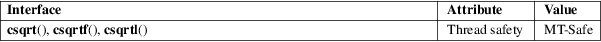

csqrt, csqrtf, csqrtl − complex square root
Math library (libm, −lm)
#include <complex.h>
double
complex csqrt(double complex z);
float complex csqrtf(float complex z);
long double complex csqrtl(long double complex
z);
These functions calculate the complex square root of z, with a branch cut along the negative real axis. (That means that csqrt(−1+eps*I) will be close to I while csqrt(−1−eps*I) will be close to −I, if eps is a small positive real number.)
For an explanation of the terms used in this section, see attributes(7).

C11, POSIX.1-2008.
glibc 2.1. C99, POSIX.1-2001.
cabs(3), cexp(3), complex(7)